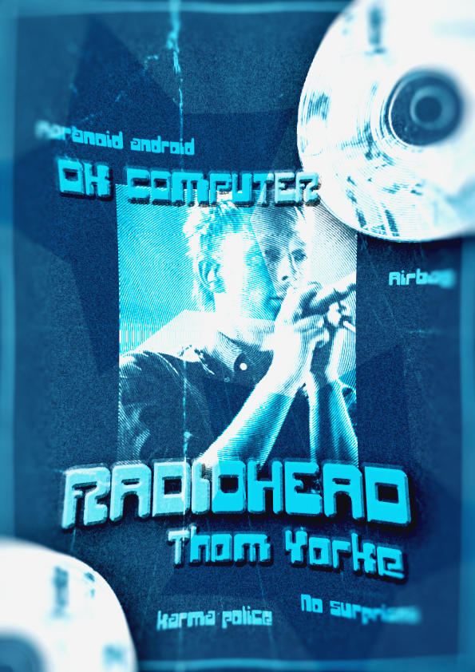
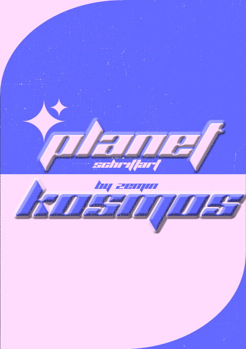
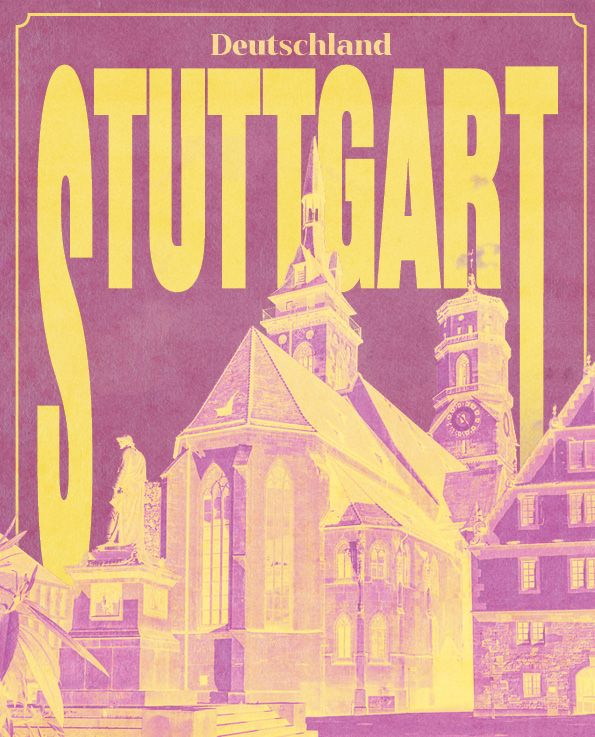
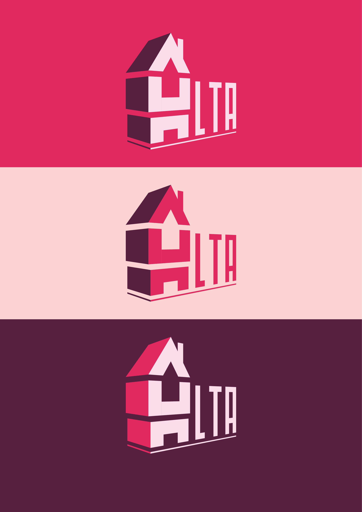

VOLODYMYR
TOVKACH
Ausgewählte Arbeiten

Radiohead Poster
Graphic Design / Adobe Photoshop & InDesign

Font-Broschüre "Planet Kosmos"
Typography / Figma & InDesign

Stuttgart City Poster
Digital Art / Adobe Photoshop & InDesign

Alta Logo Design
Branding / Adobe Illustrator
Über mich
Ich bin angehender Mediengestalter (Digital & Print) an der Johannes-Gutenberg-Schule. Mein Fokus liegt auf präzisem Design mit der Adobe Creative Cloud und Figma. Durch mein Praktikum bei Photofabrics bringe ich praktische Erfahrung in der Umsetzung kreativer Projekte mit. Strukturiert, lernwillig und detailverliebt.